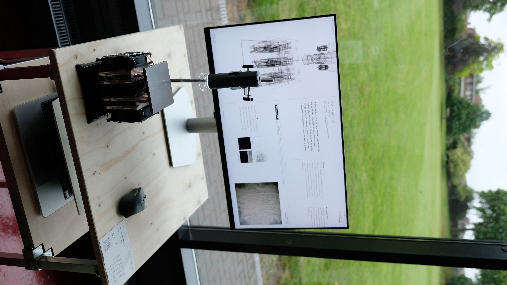
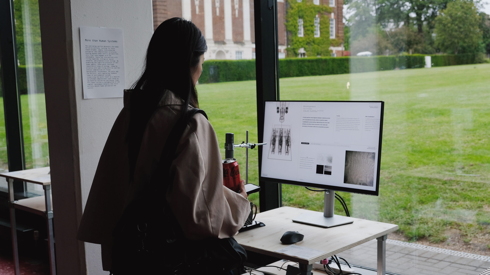

Morphogenesis
Morphogenesis studies how form emerges through material and computational processes. On a Peltier-cooled surface, ice crystals grow and dissolve in continuous cycles, while a machine vision system reads these formations through several computational processes that search, generate, and transform. The work proposes that form is never fixed, but unfolds through an ongoing exchange between material and perception.
Xiaohan Sun